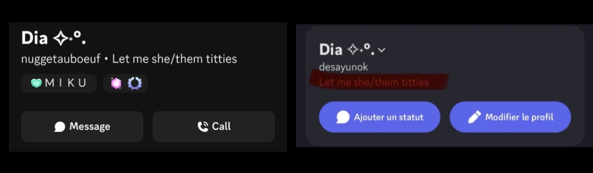
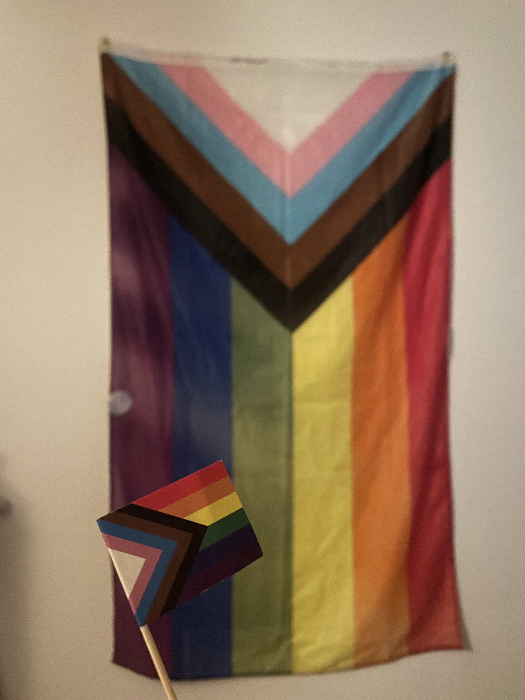
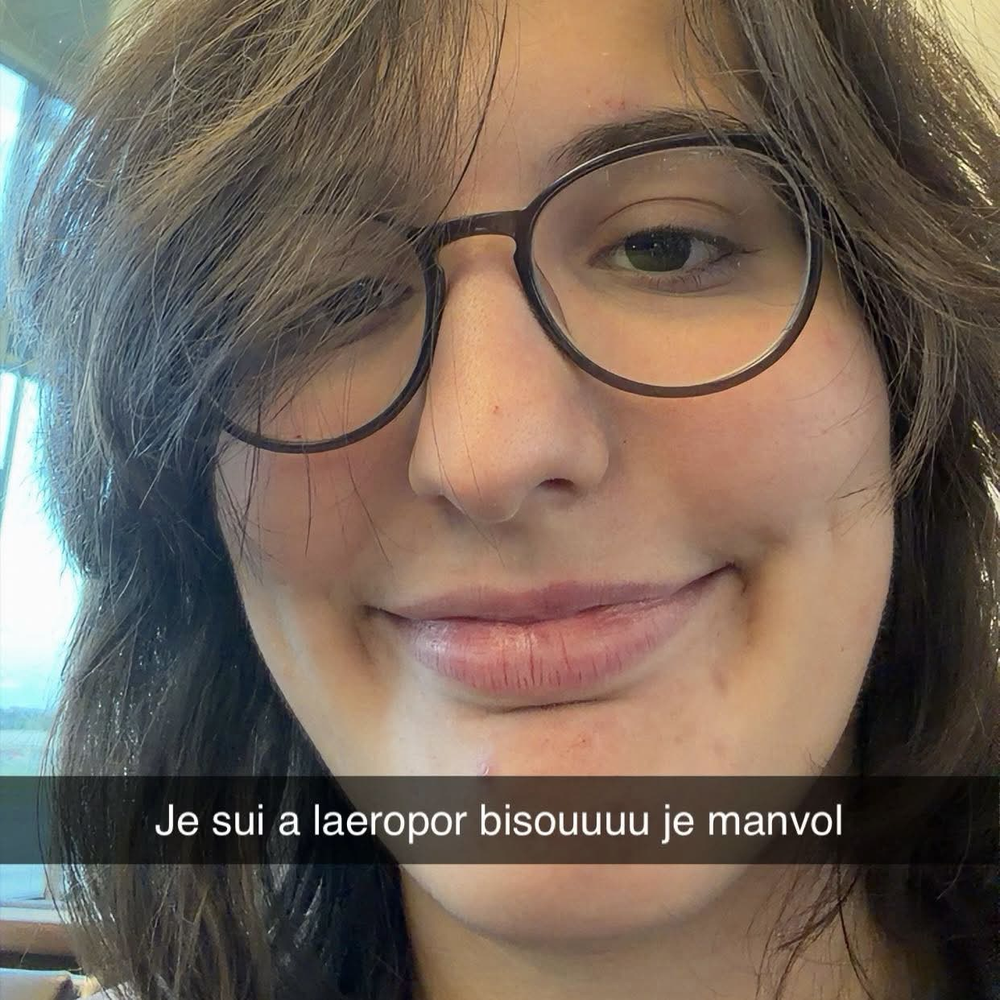

Joyeux anniversaire !
Aujourd'hui, pour le monde entier, ça ne change rien car c'est une journée comme les autres... mais pour
toi,
c'est un grand jour. Parce que t'as enfin 20 piges !
Adieu, jeunesse ! Euh... Bonjour, vieillesse !
Mais trêves de cachotteries. Pour ton vingtième anniversaire, je t'ai préparé...
disons, une
petite surprise.

Commençons par le commencement (on finira par la fin)
En 2020, j'ai rejoint un serveur random sur Discord. Ze infamous Otaku Gang.
Le plus grand rassemblement d'adolescents autodiagnostiqués, de fous du bus et de gens particulièrement sus sur l'Internet tout entier (à l'exception de Celui-dont-On-Ne-Cite-Pas-L'Url, Lord Jeuxvidéopointcom).
Et au milieu de ces gens, il y avait des personnes avec qui c'était possible de discuter autrement que par onomatopées et sans craindre pour sa santé mentale, et une certaine Bubulle en faisait partie. Une Suisse un peu random, réservée et déjà très chill en ces temps-là.
On est devenus potes, plus ou moins. On discutait de trucs un peu aléatoires, je sortais des phrases et des tirades que je ne pensais jamais regretter (et pourtant, quand je les revois, elles me cringent tellement...). En même temps qu'elle, j'avais plein d'autres potes sur Discord, et puis c'était le Covid, et dans la fièvre de cette épidémie, les serveurs étaient toujours plein à craquer de gens à rencontrer et avec lesquels discuter. C'était chouette.
Puis j'ai vécu un sale moment avec un gars que je croyais être mon ami, et j'ai abandonné et les serveurs Discord (qui étaient morts, de tte façon), et mes relations digitales.
Et puis le lycée s'est passé avec son lot de traumas, et j'ai raté ma première année d'études supérieures, et dans cette phase de transition, je me suis dit que ce serait sympa de parler avec des gens qui avaient fait partie intégrante de mon passé.
Et parmi ces gens il y avait... *roulements de tambour* Bubulle.
Mais permets-moi, pour parler de ça, on va un tout petit peu avancer dans le temps (pas de beaucoup, mais juste un peu).

Bubulle la giga droitarde (pov : une des premières photos qu'elle m'a envoyé)
J'ai vite appris que Bubulle (qui se faisait maintenant appeller Dia avec
des petites étoiles trop
stylées que j'arrive toujours pas à reproduire) était une personne bien plus intéressante que je ne
l'imaginais.
A la fois, elle avait gardé ses hobbies de toujours (on ne commentera pas ici son nombre d'heures
indécents sur certains jeux), mais contrairement à la personne que j'avais connue à l'époque, elle
avait l'air beaucoup plus heureuse, vivace et épanouie.
Elle était staff dans des festivals, écoutait de la musique d'ascenseur et avait de grandes attentes
pour elle-même.
Elle voyageait, avait un copain qui paraissait être une personne exceptionnelle, et elle avait
l'air... je sais pas, rayonnante ??
Je ne savais pas, à ce moment, que Bubulle sortait d'une grosse phase de dépression. Je ne savais
pas qu'elle avait
eu des galères vers la fin du collège, et que ça l'avait mise très mal. Je ne savais pas qu'elle
souffraient d'insomnies qui la pourchassaient chaque nuit.
Je ne savais rien de son TCA, de ses problèmes familiaux, ni aucune autre de ces circonstances. Je
ne savais rien de cette Nadia.
Non, moi, tout ce que je savais au moment où on a commencé à parler, c'est qu'elle avait un drapeau gay sur son mur, qu'elle construisait une maison sakura et qu'elle était super cool. Qu'elle était très ouverte, et qu'elle pouvait parler de tout et même de n'importe quoi. Et qu'elle était terminally online. Absolument, totalement, terminally online.
Et puis le temps a passé. On a continué à échanger, parfois maladroitement, parfois en riant de la bonne époque de l'Otaku Gang. Et j'ai aussi appris ce que son pseudo voulait dire.
C'est simple. Dia, c'était son surnom. Bubulle, en réalité, s'appelait Nadia.
Copains comme cochons.
J'étais convaincu (et elle aussi, je crois) qu'on arrêterait de parler au bout de quelques jours. Allez, quelques semaines. Nous n'avions pas tant de choses à nous raconter, non ? D'accord, on est deux nerds avec une passion pour les musiques assommantes d'un autre siècle. Mais il paraissait surprenant, nous qui ne nous ressemblons pas tant que ça, que nous ne nous fréquentions plus que quelques mois.
Pourtant, on a continué à parler pendant plusieurs semaines, puis ces semaines sont devenus des mois, qui sont devenus des trimestres. Auxquels ont succédés les semestres, puis les années.
Comment était-ce possible ? Nous parlions de construire des moulins sur Minecraft en déconnant sur nos vies un instant, et puis je clignais les yeux, et elle était allée à Singapour et entamait son arc université.
Et aujourd'hui, cette personne avait vingt ans. Ce à quoi j'ai envie de me répondre : "Ta gueule. TU vas pas me dire qu'on est en 2026, que je suis entré en troisième année et que j'ai pas trouvé de meuf avant GTA VI ???? T'es pas sérieux ????"
Pourtant, on est bien en 2026. Ils disaient vrai, les Neg'Marrons. Les jours passent comme des voitures, ouais.
On a commencé par le début, finissons par la fin.
aaaaa
